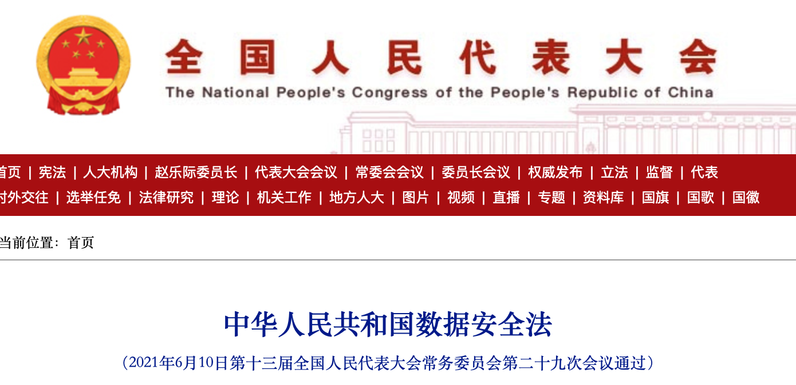
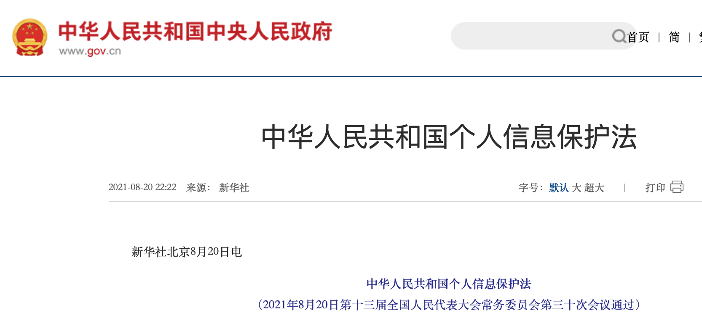

道德与法律#
2018年，Facebook因为剑桥分析公司（Cambridge Analytica）未经授权获取了数百万用户的个人信息而陷入丑闻。剑桥分析公司利用这些数据进行了选民分析，以影响2016年美国总统选举结果。这次事件引发了全球范围内对数据隐私和社交媒体平台数据使用行为的关注和担忧。
金融机构在业务活动中产生了海量数据，包括但不限于客户信息、交易信息、市场数据、风险数据等。新技术的革新给金融行业带来了巨大的变革，但也带来了新的道德和法律风险。
1. 道德问题#
1.2 算法歧视问题#
金融机构利用大数据进行风控、信贷评估等业务时，可能会存在算法歧视问题，对某些群体造成不公平待遇。例如基于种族、性别或收入水平等因素进行的定价和风险评估，可能对某些群体造成不公平或不利的影响。
1.3 数据伦理问题#
金融大数据的应用引发了一系列数据伦理问题，例如数据所有权、数据使用目的、数据主体权利等。
2. 法律法规问题#
金融机构在收集、使用、存储、传输和销毁金融大数据时，必须遵守相关法律法规，如《中华人民共和国数据安全法》、《中华人民共和国个人信息保护法》等。
2.1《中华人民共和国数据安全法》#
《中华人民共和国数据安全法》是中国于2021年6月10日通过的一部重要法律，于2021年9月1日正式生效实施。该法旨在加强对数据安全的监管和保护，规范数据处理行为，保障个人信息安全，维护国家安全和社会稳定。
{kind=link}
该法的主要内容包括：
数据安全保障责任：规定了数据处理者的责任和义务，要求其依法保护数据安全，采取必要的技术和管理措施，防止数据泄露、损毁、篡改或丢失。
个人信息保护：强调个人信息的保护，规定了个人信息的收集、使用、处理和保护要求，明确了个人信息处理者的义务和责任，禁止违法收集、使用个人信息。
重要数据安全：对于国家安全、经济发展、社会公共利益等方面的重要数据，规定了特殊的保护要求，禁止将重要数据存储、处理和传输至境外。
跨境数据传输：规定了跨境数据传输的管理办法，要求关键信息基础设施运营者和数据处理者在跨境数据传输时需经过安全评估和国家安全审查。
监督管理和处罚：设立了数据安全监督管理机构，加强对数据安全的监督管理，规定了违法违规行为的处罚和责任追究。
《数据安全法》的出台填补了我国数据安全法律法规的空白，为加强数据安全管理、保护个人信息安全、维护国家安全提供了法律保障。同时，该法也对数据处理者和相关企业提出了更严格的要求和责任，推动了我国数据安全治理体系的建设和完善。
2.2《中华人民共和国个人信息保护法》#
《中华人民共和国个人信息保护法》是中国于2021年8月20日通过的一部重要法律，于2021年9月1日正式生效实施。该法旨在加强对个人信息的保护，规范个人信息的收集、使用、处理和保护行为，维护公民的个人信息权益和社会稳定。
{kind=link}
该法的主要内容包括：
个人信息的范围和定义：明确了个人信息的范围和定义，包括与特定个人有关的各种信息，如姓名、身份证号码、手机号码、银行账号等。
个人信息的收集和使用：规定了个人信息的收集和使用原则，强调了合法、正当、必要原则，明确了个人信息处理者的责任和义务，禁止违法收集和滥用个人信息。
个人信息安全保护：要求个人信息处理者采取技术和管理措施保护个人信息安全，防止个人信息泄露、篡改、丢失等安全风险。
个人信息的查询和更正：规定了个人信息主体有权查询、更正、删除个人信息的权利，个人信息处理者应当提供便利和支持。
个人信息出境传输：规定了个人信息出境传输的管理办法，要求个人信息处理者在出境传输个人信息前需进行安全评估和国家安全审查。
监督管理和处罚：设立了个人信息保护监管部门，加强对个人信息保护的监督管理，对违法违规行为进行处罚和责任追究。
《个人信息保护法》的出台填补了我国个人信息保护领域的法律空白，为加强个人信息保护、规范个人信息处理行为、维护公民的个人信息权益提供了法律保障。同时，该法也对个人信息处理者和相关企业提出了更严格的要求和责任，促进了我国个人信息保护制度的建设和完善。
2.3 其他国家相关法律法规#
欧盟和美国等国家和地区都制定了相关法律法规，以保护金融大数据中的个人隐私和安全。
2.3.1 欧盟#
欧盟在数据隐私和安全方面立法较为完善，主要法律法规包括：
《通用数据保护条例》（General Data Protection Regulation，简称 GDPR）：GDPR是欧盟最重要的数据隐私保护法律，适用于所有在欧盟境内处理个人信息的组织，包括金融机构。GDPR对个人信息的收集、使用、存储、传输等都做出了严格规定，并赋予数据主体一系列权利，如知情权、访问权、更正权、删除权等。
《数据治理法案》（Data Governance Act，简称 DGA）：DGA旨在促进欧盟内部数据流通，同时加强对数据的治理和监管。DGA对数据所有权、数据使用目的、数据主体权利等做出了规定，并建立了数据治理框架。
GDPR于2016年4月27日通过的一项数据隐私保护法律，于 2018年5月25日正式生效。DGA于2022年4月6日由欧洲议会通过，并于 2022年6月7日由欧盟理事会批准，于2023年1月1日生效。
2.3.2 美国#
美国在数据隐私和安全方面立法较为分散，主要法律法规包括：
《格莱姆斯-比尔奇-莱利隐私法案》（Gramm-Leach-Bliley Act，GLBA）：GLBA要求金融机构制定和实施保障客户信息安全的措施，并对金融机构的客户信息保护实践进行监管。
《公平信贷报告法案》（Fair Credit Reporting Act，FCRA）：FCRA对个人信用报告的收集、使用和披露做出了规定，并赋予消费者一系列权利，如获取信用报告副本、纠正信用报告错误等。
《加州消费者隐私法案》（California Consumer Privacy Act，CCPA）：CCPA是美国最严格的数据隐私保护法律之一，赋予加州居民一系列权利，如知情权、访问权、删除权、选择退出销售个人信息权等。
总体而言，欧盟在数据隐私和安全方面的立法较为完善，对个人信息的保护力度较高。美国在数据隐私和安全方面的立法较为分散，但近年来也出台了一些重要法律法规，加强对个人信息的保护。
参考#
《中华人民共和国数据安全法》，http://www.npc.gov.cn/c2/c30834/202106/t20210610_311888.html
《中华人民共和国个人信息保护法》，https://www.gov.cn/xinwen/2021-08/20/content_5632486.htm
欧盟《通用数据保护条例》（GDPR），https://eur-lex.europa.eu/legal-content/EN/TXT/HTML/?uri=CELEX:32016R0679&from=EN
欧盟《数据治理法案》（Data Governance Act，简称 DGA），https://eur-lex.europa.eu/legal-content/EN/TXT/?uri=CELEX:32022R0868
美国《格莱姆斯-比尔奇-莱利隐私法案》，https://www.ftc.gov/business-guidance/privacy-security/gramm-leach-bliley-act
美国《公平信贷报告法案》，https://www.ftc.gov/legal-library/browse/statutes/fair-credit-reporting-act
美国《加州消费者隐私法案》，https://www.oag.ca.gov/privacy/ccpa